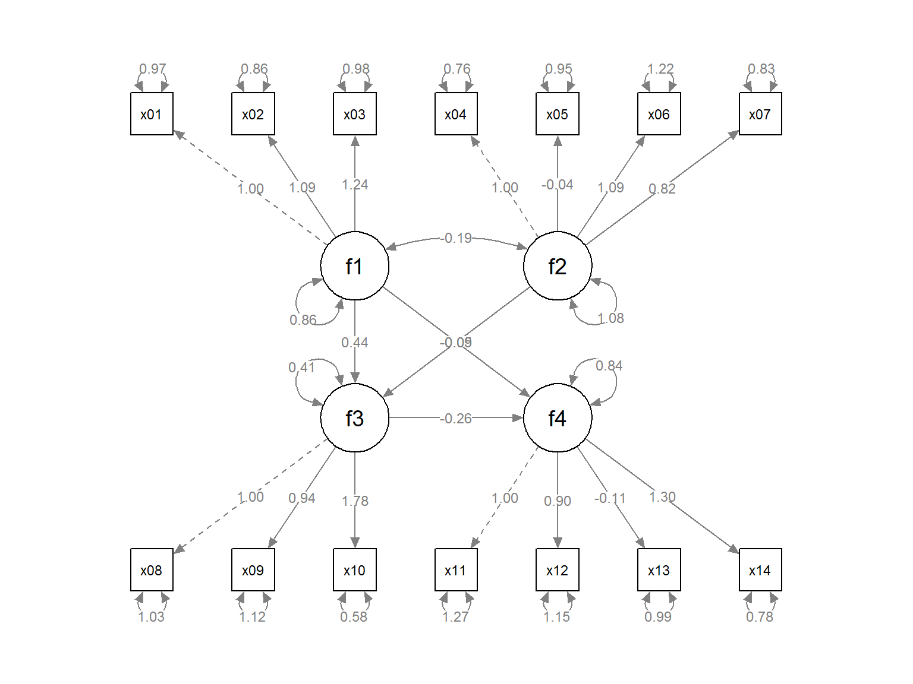
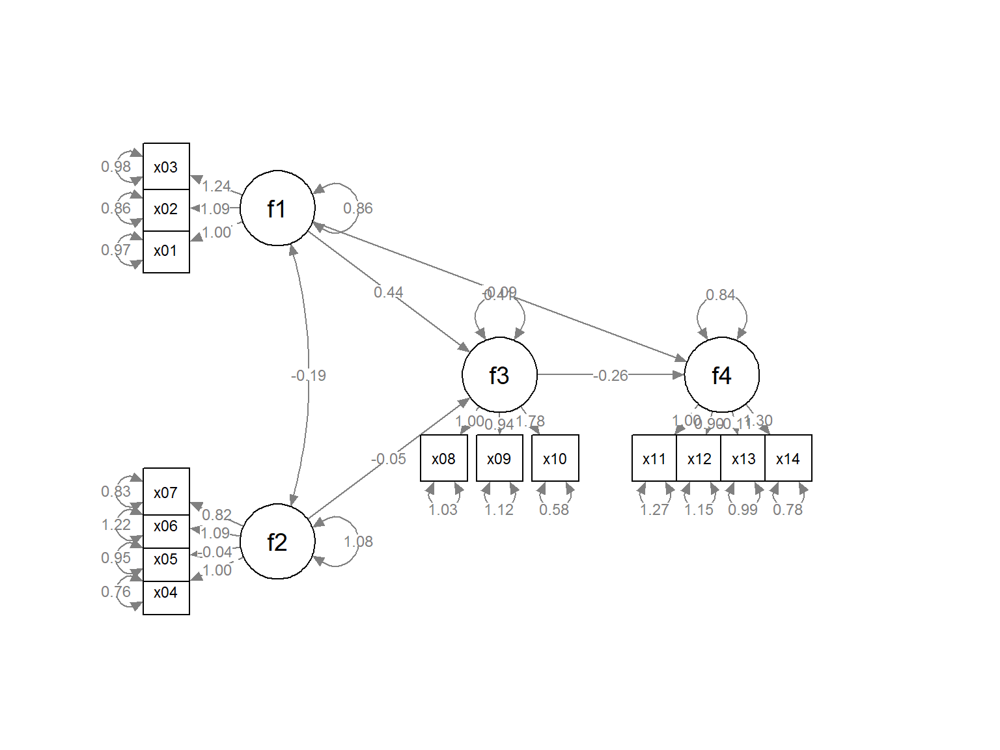
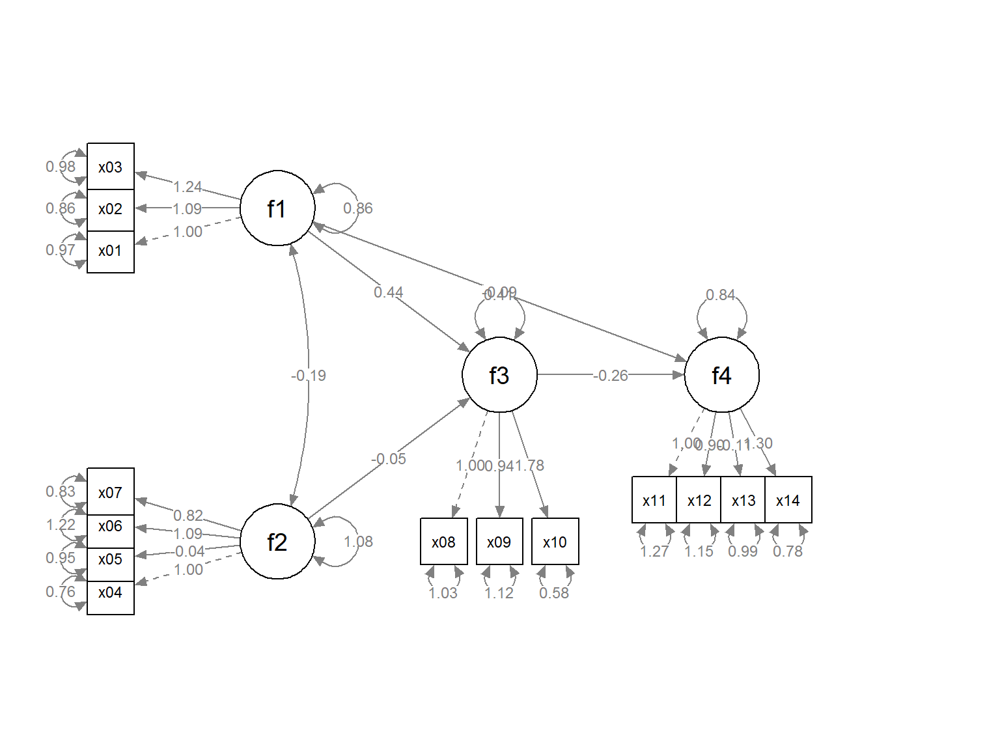
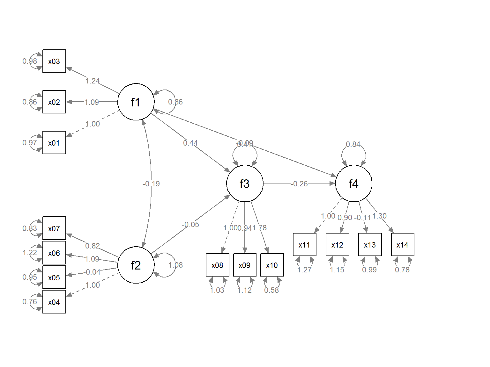
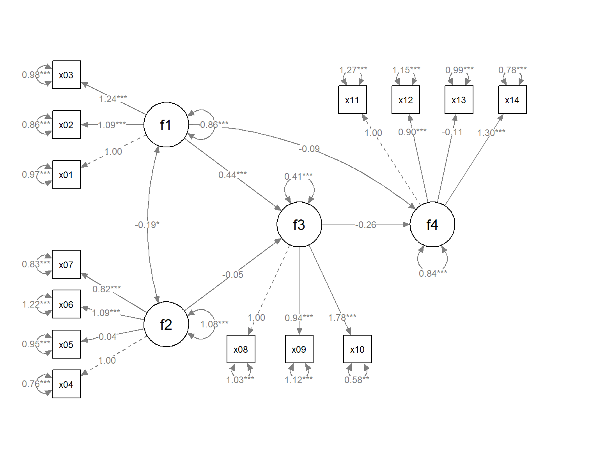

vignettes/quick_start_sem.Rmd
quick_start_sem.RmdThe semptools package contains functions that post-process an output from semPlot::semPaths, to help users to customize the appearance of the graphs generated by semPlot::semPaths. For the introduction to functions for doing very specific tasks, such as moving the parameter estimate of a path or rotating the residual of a variable, please refer to Quick Start Guide. The present guide focuses on how to use set_sem_layout() to configure various aspects of an semPaths graph generated for a typical structural equation model (SEM) with latent factors. For configuring the layout of a confirmatory factor analysis (CFA) model with no structural path between factors, please refer to the guide for set_cfa_layout.
Let us consider an SEM model. We will use sem_example, a sample CFA dataset from semptools with 14 variables for illustration.
library(semptools) head(sem_example) #> x01 x02 x03 x04 x05 x06 #> 1 2.86146169 2.28888390 3.3807647 0.1914158 0.09478457 -0.3948427 #> 2 -0.24586145 -1.29859811 -0.3707382 2.2322465 -0.41895325 -0.5646819 #> 3 0.07918257 0.06674484 0.3227760 -3.0431693 -1.09335308 -0.6259012 #> 4 0.22699200 -1.27510157 0.3342744 -0.4921044 -1.52885336 -1.9414032 #> 5 0.19182285 0.20956862 0.7944837 1.0895856 -0.07406821 5.2554002 #> 6 -1.43035488 0.41510263 0.4760080 -0.1709750 0.70178380 0.7451309 #> x07 x08 x09 x10 x11 x12 x13 #> 1 -0.06024712 1.3197511 2.806842 2.3301048 2.069026 0.5688317 -0.8075850 #> 2 -0.16187846 3.0500792 1.512515 1.7774682 2.990709 2.1249459 0.7668982 #> 3 -1.96064764 -4.9081647 -2.048014 -3.1902261 1.402752 1.8877131 1.3558491 #> 4 0.98894776 0.1891661 -1.646499 -1.7087066 -0.216526 0.9113144 -0.1102584 #> 5 2.14235171 -0.6229851 1.234496 -0.2952321 2.808985 2.8675174 -0.1240154 #> 6 -0.87651786 1.4306765 1.110917 0.7991827 -1.020746 0.3306105 1.3434707 #> x14 #> 1 1.988641 #> 2 1.539397 #> 3 1.106808 #> 4 -0.666670 #> 5 2.442253 #> 6 -1.448420
This is the SEM model to be fitted:
mod <- 'f1 =~ x01 + x02 + x03 f2 =~ x04 + x05 + x06 + x07 f3 =~ x08 + x09 + x10 f4 =~ x11 + x12 + x13 + x14 f3 ~ f1 + f2 f4 ~ f1 + f3 '
The lavaan results:
library(lavaan) #> This is lavaan 0.6-5 #> lavaan is BETA software! Please report any bugs. fit <- lavaan::sem(mod, cfa_example) summary(fit) #> lavaan 0.6-5 ended normally after 39 iterations #> #> Estimator ML #> Optimization method NLMINB #> Number of free parameters 33 #> #> Number of observations 200 #> #> Model Test User Model: #> #> Test statistic 112.948 #> Degrees of freedom 72 #> P-value (Chi-square) 0.001 #> #> Parameter Estimates: #> #> Information Expected #> Information saturated (h1) model Structured #> Standard errors Standard #> #> Latent Variables: #> Estimate Std.Err z-value P(>|z|) #> f1 =~ #> x01 1.000 #> x02 1.093 0.136 8.024 0.000 #> x03 1.245 0.154 8.090 0.000 #> f2 =~ #> x04 1.000 #> x05 -0.041 0.076 -0.538 0.591 #> x06 1.090 0.143 7.632 0.000 #> x07 0.824 0.109 7.557 0.000 #> f3 =~ #> x08 1.000 #> x09 0.938 0.149 6.315 0.000 #> x10 1.779 0.259 6.857 0.000 #> f4 =~ #> x11 1.000 #> x12 0.899 0.134 6.700 0.000 #> x13 -0.108 0.085 -1.270 0.204 #> x14 1.299 0.196 6.624 0.000 #> #> Regressions: #> Estimate Std.Err z-value P(>|z|) #> f3 ~ #> f1 0.443 0.095 4.687 0.000 #> f2 -0.045 0.062 -0.731 0.464 #> f4 ~ #> f1 -0.093 0.120 -0.773 0.439 #> f3 -0.262 0.147 -1.788 0.074 #> #> Covariances: #> Estimate Std.Err z-value P(>|z|) #> f1 ~~ #> f2 -0.186 0.091 -2.036 0.042 #> #> Variances: #> Estimate Std.Err z-value P(>|z|) #> .x01 0.967 0.129 7.509 0.000 #> .x02 0.857 0.130 6.581 0.000 #> .x03 0.978 0.159 6.137 0.000 #> .x04 0.760 0.142 5.365 0.000 #> .x05 0.954 0.095 9.994 0.000 #> .x06 1.222 0.188 6.510 0.000 #> .x07 0.832 0.117 7.136 0.000 #> .x08 1.025 0.125 8.232 0.000 #> .x09 1.117 0.129 8.657 0.000 #> .x10 0.577 0.215 2.685 0.007 #> .x11 1.271 0.173 7.330 0.000 #> .x12 1.151 0.150 7.683 0.000 #> .x13 0.986 0.099 9.968 0.000 #> .x14 0.783 0.210 3.726 0.000 #> f1 0.857 0.176 4.857 0.000 #> f2 1.085 0.206 5.259 0.000 #> .f3 0.408 0.102 3.998 0.000 #> .f4 0.837 0.198 4.233 0.000
This is the plot from semPaths:
library(semPlot) #> Registered S3 methods overwritten by 'huge': #> method from #> plot.sim BDgraph #> print.sim BDgraph p <- semPaths(fit, whatLabels="est", sizeMan = 5, node.width = 1, edge.label.cex = .75, style = "ram", mar = c(5, 5, 5, 5))

We will see how set_sem_layout() can be used to do the following tasks to post-process the graph:
Change the order of the indicators.
Assign factors to indicators manually.
Specify how to set the approximate positions of the factors.
Specify how to place the indicators of a factor.
Adjust the placement of the indicators relative to their corresponding factors.
Move the loadings along the paths from factors to indicators.
Suppose we want to do this:
We would like to assign the indicators to the factors this way:
x04, x05, x06, and x07 for f2.
x01, x02, and x03 for f1.
x11, x12, x13, and x14 for f4.
x08, x09, and x10 for f3.
To do this, we create two vectors, one for the argument indicator_order and the other for the argument indicator_factor.
indicator_order is a string vector with length equal to the number of indicators, with the desired order if the indicators are placed above the corresponding factors. In this example, it will be like this:indicator_order <- c("x04", "x05", "x06", "x07", "x01", "x02", "x03", "x11", "x12", "x13", "x14", "x08", "x09", "x10")
indicator_factor is a string vector with length equal to the number of indicators. The elements are the names of the latent factors, denoting which factor each indicator will be assigned to:indicator_factor <- c( "f2", "f2", "f2", "f2", "f1", "f1", "f1", "f4", "f4", "f4", "f4", "f3", "f3", "f3")
To specify the locations of the factors, we need two more arguments, factor_layout and factor_point_to.
factor_layout is a matrix of arbitrary size, with either NA or the name of a factor. For example:
This sets up a 3-by-3 grid, with f1 on the top left, f2 on the bottom left, f3 in the center, and f4 on the right of f3. Each factor must be in one and only one cell of this matrix.
Note that a column or row can contain only NA, to increase the vertical or horizontal distance between factors.
factor_point_to is a matrix of the size as factor_layout, with either NA or one of these: “down”, “left”, “up”, or “right”, to indicate the direction that a factor “points to” its indicator. For example:
factor_point_to <- matrix(c("left", NA, NA, NA, "down", "down", "left", NA, NA), byrow = TRUE, 3, 3)
f1 and f2 will point to the left (i.e., indicators on the left), f3 and f4 will point downwards.
In sum, the set_sem_layout() function needs at least four arguments:
semPaths_plot: The semPaths plot.
indicator_order: The vector for the order of indicators.
indicator_factor: The vector for assigning indicators to latent factors.
factor_layout: The position of the factors on a grid.
factor_point_to: The placement of the indicators.
They do not have to be named if they are in this order.
We now use set_sem_layout() to post-process the graph:
p2 <- set_sem_layout(p, indicator_order = indicator_order, indicator_factor = indicator_factor, factor_layout = factor_layout, factor_point_to = factor_point_to) plot(p2)

The placement of the indicators are too close to the indicators and to neighbouring indicators. We can adjust the relative position in two ways.
We can use the argument indicator_push to push the indicators of a factor away from it. The argument needs a list of lists. In each sublist, there should be two named elements: node: the name of a factor; push: the multiplier to the distance from the factor to the indicators. For example:
indicator_push <- list(list(node = "f3", push = 2), list(node = "f4", push = 1.5), list(node = "f1", push = 1.5), list(node = "f2", push = 1.5))
This list will double the distance between the indicators of f3 and their factors, and multiply the distance between the indicators of f4, f1, and f2 and their factors by 1.5. If push is less than 1, the indicators will be “pulled” towards their factors.
p2 <- set_sem_layout(p, indicator_order = indicator_order, indicator_factor = indicator_factor, factor_layout = factor_layout, factor_point_to = factor_point_to, indicator_push = indicator_push) plot(p2)

We can use the argument indicator_spread to spread out the indicators of a factor, increasing the distance between the indicators. The argument needs a list of lists. In each sublist, there should be two named elements: node: the name of a factor; spread: the multiplier to the distance between neighbouring indicators. For example:
indicator_spread <- list(list(node = "f1", spread = 2), list(node = "f2", spread = 1.5), list(node = "f4", spread = 1.5))
This list will double the distance between the indicators of f1, and multiply the distance between the indicators of f2 and f4. and its indicators by 1.5. If spread is less than 1, the indicators will be squeezed towards each others.
p2 <- set_sem_layout(p, indicator_order = indicator_order, indicator_factor = indicator_factor, factor_layout = factor_layout, factor_point_to = factor_point_to, indicator_push = indicator_push, indicator_spread = indicator_spread) plot(p2)

We can move the loadings of indicators along the paths by the argument loading_position. If we supply one single number, from 0 to 1, this number will be used for the position of all loadings. A value of .5 place the loadings on the middle of the paths. Larger the value, closer the loadings to the indicators. Smaller the value, closer the loadings to the factors.
We can also use a list of lists to specify the positions of indicators for each factor. The default is .50 and so we only need to specify the positions for factors to be changed. TIn each sublist, there should be two named elements: node: the name of a factor; position: the positions of the its loadings. For example:
loading_position <- list(list(node = "f2", position = .7), list(node = "f3", position = .8), list(node = "f4", position = .8))
p2 <- set_sem_layout(p, indicator_order = indicator_order, indicator_factor = indicator_factor, factor_layout = factor_layout, factor_point_to = factor_point_to, indicator_push = indicator_push, indicator_spread = indicator_spread, loading_position = loading_position) plot(p2)
Like other functions in semptools, the set_sem_layout() function can be chained with other functions using the pipe operator, %>%, from the package magrittr. Suppose we want to mark the significant test results for the free parameters using mark_sig(), and use set_curve() to change the curvature of f1 ~~ f2 covariances and f4 ~ f1 paths (we push and spread some indicators to make room for the asterisks, and change the orientation of f4 to up):
factor_point_to <- matrix(c("left", NA, NA, NA, "down", "up", "left", NA, NA), byrow = TRUE, 3, 3) indicator_push <- list(list(node = "f3", push = 2.5), list(node = "f4", push = 2.5), list(node = "f1", push = 1.5), list(node = "f2", push = 1.5)) indicator_spread <- list(list(node = "f1", spread = 2), list(node = "f2", spread = 2), list(node = "f4", spread = 2), list(node = "f3", spread = 1.75)) loading_position <- list(list(node = "f2", position = .6), list(node = "f3", position = .8), list(node = "f4", position = .8)) library(magrittr) p2 <- set_sem_layout(p, indicator_order = indicator_order, indicator_factor = indicator_factor, factor_layout = factor_layout, factor_point_to = factor_point_to, indicator_push = indicator_push, indicator_spread = indicator_spread, loading_position = loading_position) %>% set_curve(list( list(from = "f1", to = "f2", new_curve = -1), list(from = "f1", to = "f4", new_curve = 1.5))) %>% mark_sig(fit) plot(p2)
